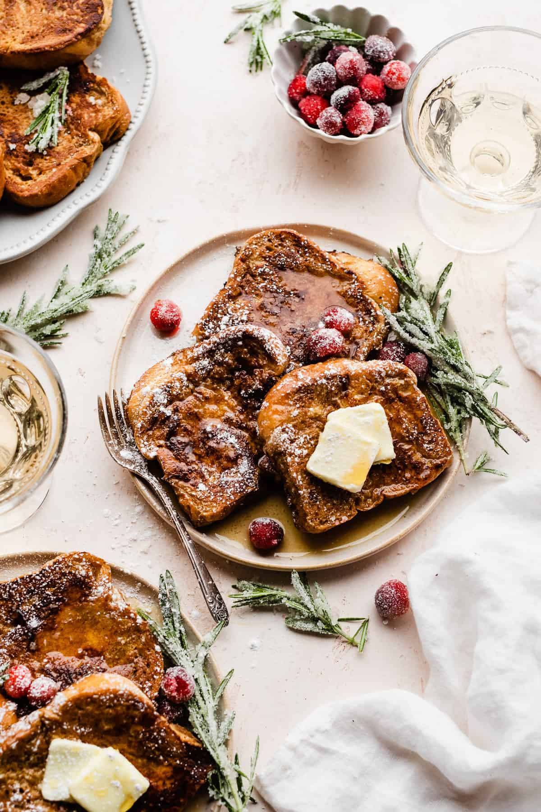

Gingerbread French Toast

Description
A quick and easy recipe to make the perfect gingerbread french toast that will fill you up with the holiday spirit, and make you the star of the kitchen.
Ingredients
- ½ cup milk
- 2 eggs
- 1 tablespoon white sugar
- 2 teaspoons rum extract
- 1 teaspoon salt
- ¼ teaspoon ground cinnamon
- ¼ teaspoon ground nutmeg
- ¼ teaspoon ground cloves
- ⅛ teaspoon ground ginger
- 4 slices white bread
- 1 tablespoon butter, or as needed
Steps
- Whisk milk, eggs, sugar, rum extract, salt, cinnamon, nutmeg, cloves, and ginger together in a bowl. Dip each bread slice into the egg mixture, turning to coat both sides.
- Melt butter in a non-stick skillet over medium heat. Add bread slices in a single layer and cook until golden brown, about 3 minutes per side.